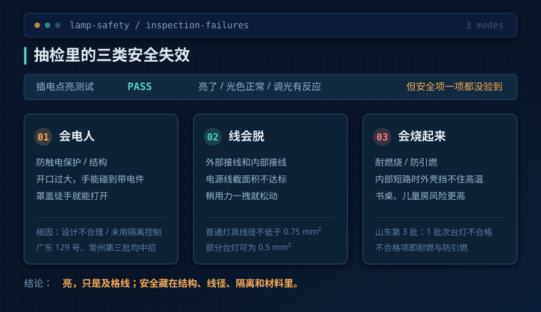
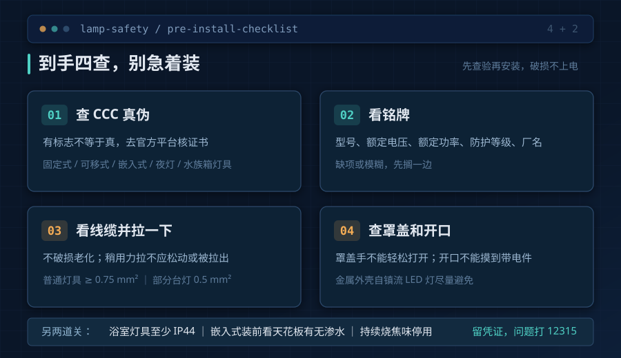
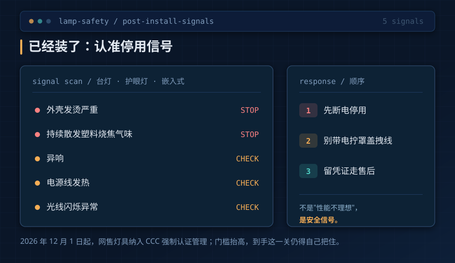

The parcel arrived the day after the eleventh of November. A recessed luminaire, a desk lamp, a small pendant: all of them looked fine in the box, and the first one lit up the moment I put a plug on it. That is precisely the problem. "It lights" is the only test most of us run, and it says almost nothing about whether the fixture is safe to leave on a ceiling or next to a child's study desk.
Regulator notices make the point awkwardly well. Guangdong notice No. 129 found two nonconforming lighting products, one from Tmall, both suspected counterfeit. Their failures sat in construction, protection against electric shock, disturbance voltage at the mains port and harmonic current. None of those items is visible to the "plug it in and see" method. A lamp can glow happily and still fail on every one of them.
China Lighting Weekly reported that, as of the twelfth of November, regulators in Guangdong, Jiangsu, Shandong and Anhui had announced 22 nonconforming luminaire batches involving 21 manufacturers and sellers since mid-October. E-commerce was described as the high-risk channel. That is the context for this article: not a claim that the industry is broken, but a note that the failures cluster in a particular corner of it.
1. Function and safety are different questions
Here is the mental split I use at the workbench.
| What energising proves | What it does not prove |
|---|---|
| The light source emits light | Whether live parts can be reached through openings |
| The driver starts | Whether the cover over live parts is firmly fixed |
| Dimming and colour change respond | Whether the cord cross-section is adequate for the load |
| Nothing smokes in the first minute | Whether the housing resists ignition after an internal short |
| The lamp fits the fitting | Whether the source is user-replaceable where the design requires it |
| The switch works | Whether disturbance voltage and harmonic current at the mains port stay within limits |
Safety in a luminaire lives in construction, wire gauge, isolation and materials. Those are properties of the object, not of the moment you switch it on. The only reliable lever a buyer has is to check before installation.
One useful caution: not every sampled failure is a safety failure. A Shaanxi notice on recessed luminaires sampled in circulation found one batch nonconforming on energy efficiency grade, efficiency limit and colour rendering index — a performance result, not a shock or fire result. Read the failing item, not just the headline. The Shandong interactive desk lamp case, by contrast, failed on resistance to combustion and flame ignition, which is very much a safety item.
2. Three failure modes worth understanding

Shock protection. The Shandong tips are concrete here: the cover that prevents access to live parts must be firmly fixed and not openable by hand, and openings must not be large enough to let a finger or tool touch live parts. Shandong also advises avoiding metal-housing self-ballasted LED lamps. The Guangdong construction item was a luminaire with a non-user-replaceable light source. That is a construction failure rather than a shock failure, but it points to the same habit: design chosen for cost, not for service or safety.
Undersized or loose wiring. Changzhou's third batch in 2026 sampled 20 luminaire batches; two failed, a 10% failure rate, and both were sold via e-commerce. The testing institute named unreasonable structural design and undersized power cord cross-section among the root causes. A cord that is too thin for the current it carries warms up; a cord that pulls loose under a firm tug exposes connections. The Shandong consumer guidance is to tug the cord firmly and confirm it does not loosen or pull out, and to check that the cord itself carries a CCC marking.
Fire. In Shandong's third provincial supervision batch, 31 batches of lighting products were sampled — one from production, retail and online channels making up the rest — and one interactive desk lamp failed on resistance to combustion and flame ignition. The manufacturer was named as Shenzhen Ma Ketu Network Technology Co., Ltd., the seller as Hunan Yize Commerce Co., Ltd. Qingdao No.2 Branch, and the model as MG25-109. The applicable standards in that batch included GB/T 7000.1-2023, GB/T 7000.201-2023, GB/T 7000.204-2023, GB 17625.1-2022 and GB/T 24906-2023. Desk lamps sit close to children and on study desks. A flame-resistance failure means an internal short can ignite the housing, and the housing is the thing a child is nearest to.
Changzhou also listed poor product design or no safety extra-low voltage isolated control gear, control gear circuit design, unstable low-cost components, and some LED drivers without CCC certification. Those are decisions made before the lamp reaches a shelf.
A second Guangdong notice, No. 132, found 15 nonconforming products — 6 online and 9 offline — and noted harmonic current as the failing item for 11 of them. Harmonic current is not something you can see. It is another entry in the column your plug-in test cannot reach.
3. Four checks before you install

First, verify the mark. Check the CCC mark on the national certification information platform rather than trusting the printed symbol. Shandong's guidance points buyers to cnca.gov.cn for certificate verification, and specifies that fixed general luminaires, portable general luminaires, recessed luminaires, socket-installed night lights and aquarium luminaires connected to mains should carry CCC. The cord, too, should carry CCC marking.
Second, read the nameplate. You want the product name and model, rated voltage, rated power or maximum lamp power, the IP rating, and the manufacturer. If the nameplate is missing or vague, stop there.
Third, inspect the cable. Look for damage or ageing, and judge whether it is too thin. Expert Shi Wei's rule: an ordinary luminaire power cord cross-section should not be below 0.75 mm², while some desk lamps may be 0.5 mm². Then do the tug test and confirm the cover over live parts is firmly fixed. Bengbu's regulators add the obvious companion rules: check the goods on arrival, never energise a damaged product, keep the receipt, and call 12315 on quality complaints.
Fourth, check the environment. Bathroom luminaires should be at least IP44. Around recessed fixtures, look at the ceiling for water stains before you cut into it; a damp void is a different installation problem from a bad lamp. Bengbu's catalogue description covers fixed general luminaires such as pendants and ceiling lights, portable general luminaires such as desk and floor lamps, recessed luminaires such as downlights and spotlights, aquarium luminaires and ground-recessed luminaires.
Then use your nose. A persistent burnt-plastic smell after extended use means stop using the fixture. On desk lamps specifically, a hot housing, odd noise, abnormal flicker or a warm power cord are all signs to replace it.
4. If it is already installed

Watch the behaviour, not the light output. A fitting that is warm to the touch at the housing or the cord, hums, flickers irregularly, or carries a burnt-plastic smell after a long run is telling you something. Switch it off, let it cool, and do not keep resetting it to see whether the problem "goes away." For a desk lamp, the guidance is plain: replace it.
For a fixed or recessed fixture, isolate the circuit before you touch anything, then check whether the cover over live parts is still firmly seated and whether the cord has worked loose. If you find water staining around a recessed fitting, treat the ceiling as part of the fault, not just the lamp. If the nameplate is unclear or the CCC mark cannot be verified, assume the worst and replace the unit rather than investigate it live.
None of this requires special test gear. It requires the willingness to stop before the product is energised, and to accept that a bright lamp is not evidence of a safe one.
5. What changes on the first of December
SAMR's "Key Industrial Products for Online Sales List (2026 Edition)" takes effect on the first of December 2026. Lighting appliances come under mandatory certification management, with ordinary classroom lighting and writing desk lamps listed separately in the category involving personal health and life safety. That is regulatory context, not a promise about individual listings; the checks above still apply.
For balance, it is worth saying that the problem is concentrated rather than universal. Xiamen's 2026 portable luminaire sampling covered 19 batches, all of which qualified, with zero failures. The failures discussed here cluster in low-price uncertified goods and e-commerce, not across the whole industry.
FAQ
Does a visible CCC logo mean the lamp is safe? No. Verify it on the national certification information platform, and read the nameplate.
Can a lamp pass a visual check and still fail a safety item? Yes. Construction, shock protection, wiring and flame resistance are not visible from the outside.
Is a warm power cord normal? For a desk lamp, a warm power cord is listed as a reason to replace it.
Do all failed samples involve fire risk? No. Some batches fail on energy efficiency or colour rendering, which is not a safety item.
What should I do with a damaged lamp on arrival? Do not energise it. Keep the receipt and, on quality complaints, call 12315.